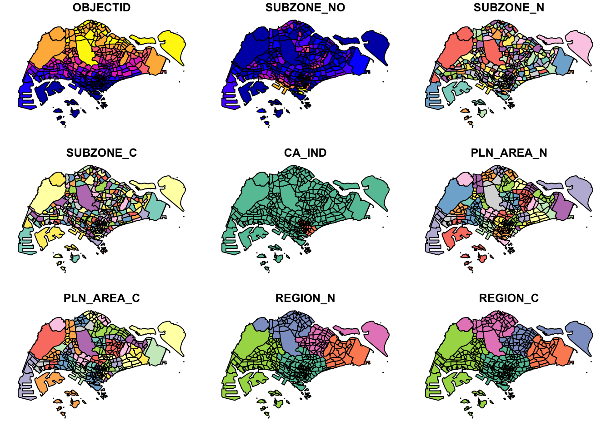
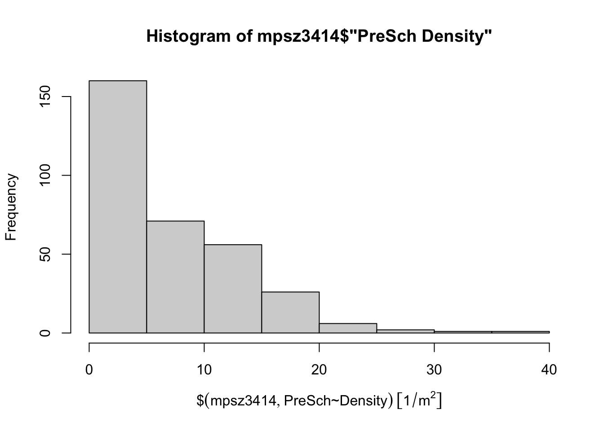
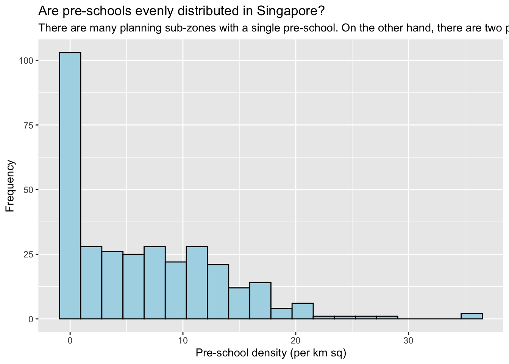

pacman::p_load(tidyverse, sf)Hands-on Exercise 1: Geospatial Data Wrangling with R
1.1 Overview
In this exercise, we will delve into the processes of importing, transforming and analyzing geospatial and apatial data in R with the use of sf and tidyverse packages.
1.2 Data Acquisition
To begin our exercise, we need to have data on hand. Hence, we would be extracting the following data sets, to be used in later sections, from the following sources:
Master Plan 2014 Subzone Boundary (Web) from data.gov.sg
Pre-Schools Location from data.gov.sg
Cycling Path from LTADataMall
Latest Version of Singapore Airbnb listing data from Inside Airbnb
1.3 Getting Started
Installing and Loading R Packages
Next, I will install and load tidyverse and sf packages using p_load() from the pacman package. The pacman package is useful to load multiple packages at once!
1.4 Importing Geospatial Data
Then, I will import the data sets that we would be working on with st_read() from sf package.
Importing geospatial data: shapefile format
mpsz <- st_read(dsn = "data/geospatial",
layer = "MP14_SUBZONE_WEB_PL")Reading layer `MP14_SUBZONE_WEB_PL' from data source
`/Users/binhui-ong/IS415-GAA/Hands-on_Ex/Hands-on_Ex01/data/geospatial'
using driver `ESRI Shapefile'
Simple feature collection with 323 features and 15 fields
Geometry type: MULTIPOLYGON
Dimension: XY
Bounding box: xmin: 2667.538 ymin: 15748.72 xmax: 56396.44 ymax: 50256.33
Projected CRS: SVY21cyclingpath <- st_read(dsn = "data/geospatial",
layer = "CyclingPathGazette")Reading layer `CyclingPathGazette' from data source
`/Users/binhui-ong/IS415-GAA/Hands-on_Ex/Hands-on_Ex01/data/geospatial'
using driver `ESRI Shapefile'
Simple feature collection with 2558 features and 2 fields
Geometry type: MULTILINESTRING
Dimension: XY
Bounding box: xmin: 11854.32 ymin: 28347.98 xmax: 42626.09 ymax: 48948.15
Projected CRS: SVY21Importing geospatial data: kml format
preschool <- st_read(dsn = "data/geospatial/PreSchoolsLocation.kml")Reading layer `PRESCHOOLS_LOCATION' from data source
`/Users/binhui-ong/IS415-GAA/Hands-on_Ex/Hands-on_Ex01/data/geospatial/PreSchoolsLocation.kml'
using driver `KML'
Simple feature collection with 2290 features and 2 fields
Geometry type: POINT
Dimension: XYZ
Bounding box: xmin: 103.6878 ymin: 1.247759 xmax: 103.9897 ymax: 1.462134
z_range: zmin: 0 zmax: 0
Geodetic CRS: WGS 841.5 Checking the Content of a Simple Feature Data Frame
In this section, we will retrieve information about the content of a simple feature data frame using different methods.
1.5.1 Working with st_geometry()
Besides mpsz$geom and mpsz, we can retrieve the geometry list-column in an sf data.frame using st_geometry().
st_geometry(mpsz)Geometry set for 323 features
Geometry type: MULTIPOLYGON
Dimension: XY
Bounding box: xmin: 2667.538 ymin: 15748.72 xmax: 56396.44 ymax: 50256.33
Projected CRS: SVY21
First 5 geometries:This would display only basic information of the feature class such as type of geometry, geographic extent of the features, and coordinate system of the data.
1.5.2 Working with glimpse()
We can also learn more about the associated attribute information in the data frame using glimpse(0) of dplyr.
glimpse(mpsz)Rows: 323
Columns: 16
$ OBJECTID <int> 1, 2, 3, 4, 5, 6, 7, 8, 9, 10, 11, 12, 13, 14, 15, 16, 17, …
$ SUBZONE_NO <int> 1, 1, 3, 8, 3, 7, 9, 2, 13, 7, 12, 6, 1, 5, 1, 1, 3, 2, 2, …
$ SUBZONE_N <chr> "MARINA SOUTH", "PEARL'S HILL", "BOAT QUAY", "HENDERSON HIL…
$ SUBZONE_C <chr> "MSSZ01", "OTSZ01", "SRSZ03", "BMSZ08", "BMSZ03", "BMSZ07",…
$ CA_IND <chr> "Y", "Y", "Y", "N", "N", "N", "N", "Y", "N", "N", "N", "N",…
$ PLN_AREA_N <chr> "MARINA SOUTH", "OUTRAM", "SINGAPORE RIVER", "BUKIT MERAH",…
$ PLN_AREA_C <chr> "MS", "OT", "SR", "BM", "BM", "BM", "BM", "SR", "QT", "QT",…
$ REGION_N <chr> "CENTRAL REGION", "CENTRAL REGION", "CENTRAL REGION", "CENT…
$ REGION_C <chr> "CR", "CR", "CR", "CR", "CR", "CR", "CR", "CR", "CR", "CR",…
$ INC_CRC <chr> "5ED7EB253F99252E", "8C7149B9EB32EEFC", "C35FEFF02B13E0E5",…
$ FMEL_UPD_D <date> 2014-12-05, 2014-12-05, 2014-12-05, 2014-12-05, 2014-12-05…
$ X_ADDR <dbl> 31595.84, 28679.06, 29654.96, 26782.83, 26201.96, 25358.82,…
$ Y_ADDR <dbl> 29220.19, 29782.05, 29974.66, 29933.77, 30005.70, 29991.38,…
$ SHAPE_Leng <dbl> 5267.381, 3506.107, 1740.926, 3313.625, 2825.594, 4428.913,…
$ SHAPE_Area <dbl> 1630379.27, 559816.25, 160807.50, 595428.89, 387429.44, 103…
$ geometry <MULTIPOLYGON [m]> MULTIPOLYGON (((31495.56 30..., MULTIPOLYGON (…1.5.3. Working with head()
To find out complete information of a feature object, we can use head() of Base R.
head(mpsz, n=5)Simple feature collection with 5 features and 15 fields
Geometry type: MULTIPOLYGON
Dimension: XY
Bounding box: xmin: 25867.68 ymin: 28369.47 xmax: 32362.39 ymax: 30435.54
Projected CRS: SVY21
OBJECTID SUBZONE_NO SUBZONE_N SUBZONE_C CA_IND PLN_AREA_N
1 1 1 MARINA SOUTH MSSZ01 Y MARINA SOUTH
2 2 1 PEARL'S HILL OTSZ01 Y OUTRAM
3 3 3 BOAT QUAY SRSZ03 Y SINGAPORE RIVER
4 4 8 HENDERSON HILL BMSZ08 N BUKIT MERAH
5 5 3 REDHILL BMSZ03 N BUKIT MERAH
PLN_AREA_C REGION_N REGION_C INC_CRC FMEL_UPD_D X_ADDR
1 MS CENTRAL REGION CR 5ED7EB253F99252E 2014-12-05 31595.84
2 OT CENTRAL REGION CR 8C7149B9EB32EEFC 2014-12-05 28679.06
3 SR CENTRAL REGION CR C35FEFF02B13E0E5 2014-12-05 29654.96
4 BM CENTRAL REGION CR 3775D82C5DDBEFBD 2014-12-05 26782.83
5 BM CENTRAL REGION CR 85D9ABEF0A40678F 2014-12-05 26201.96
Y_ADDR SHAPE_Leng SHAPE_Area geometry
1 29220.19 5267.381 1630379.3 MULTIPOLYGON (((31495.56 30...
2 29782.05 3506.107 559816.2 MULTIPOLYGON (((29092.28 30...
3 29974.66 1740.926 160807.5 MULTIPOLYGON (((29932.33 29...
4 29933.77 3313.625 595428.9 MULTIPOLYGON (((27131.28 30...
5 30005.70 2825.594 387429.4 MULTIPOLYGON (((26451.03 30...1.6 Plotting the Geospatial Data
To visualize the geospatial features, we can use plot() of R Graphic.
plot(mpsz)
By default, the plot of an sf object is a multi-plot of all attributes up to a reasonable maximum as shown above.
However, we can choose to plot only the geometry with the following code chunk:
plot(st_geometry(mpsz))
We can also plot the sf object by using a specific attribute as shown below:
plot(mpsz["PLN_AREA_N"])
1.7 Working with Projection
1.7.1 Assigning EPSG code to a simple feature data frame
We use st_crs() from the sf package to retrieve the coordinate reference system for an object.
st_crs(mpsz)Coordinate Reference System:
User input: SVY21
wkt:
PROJCRS["SVY21",
BASEGEOGCRS["SVY21[WGS84]",
DATUM["World Geodetic System 1984",
ELLIPSOID["WGS 84",6378137,298.257223563,
LENGTHUNIT["metre",1]],
ID["EPSG",6326]],
PRIMEM["Greenwich",0,
ANGLEUNIT["Degree",0.0174532925199433]]],
CONVERSION["unnamed",
METHOD["Transverse Mercator",
ID["EPSG",9807]],
PARAMETER["Latitude of natural origin",1.36666666666667,
ANGLEUNIT["Degree",0.0174532925199433],
ID["EPSG",8801]],
PARAMETER["Longitude of natural origin",103.833333333333,
ANGLEUNIT["Degree",0.0174532925199433],
ID["EPSG",8802]],
PARAMETER["Scale factor at natural origin",1,
SCALEUNIT["unity",1],
ID["EPSG",8805]],
PARAMETER["False easting",28001.642,
LENGTHUNIT["metre",1],
ID["EPSG",8806]],
PARAMETER["False northing",38744.572,
LENGTHUNIT["metre",1],
ID["EPSG",8807]]],
CS[Cartesian,2],
AXIS["(E)",east,
ORDER[1],
LENGTHUNIT["metre",1,
ID["EPSG",9001]]],
AXIS["(N)",north,
ORDER[2],
LENGTHUNIT["metre",1,
ID["EPSG",9001]]]]We see that the EPSG assigned to mpsz is 9001. However, the EPSG for svy21 is actually 3414.
Hence, we have to assign a new EPSG to mpsz. We define the updated mpsz as mpsz3414 using st_set_crs() from the sf package.
mpsz3414 <- st_set_crs(mpsz, 3414)Let’s check that the EPSG is correct now.
st_crs(mpsz3414)Coordinate Reference System:
User input: EPSG:3414
wkt:
PROJCRS["SVY21 / Singapore TM",
BASEGEOGCRS["SVY21",
DATUM["SVY21",
ELLIPSOID["WGS 84",6378137,298.257223563,
LENGTHUNIT["metre",1]]],
PRIMEM["Greenwich",0,
ANGLEUNIT["degree",0.0174532925199433]],
ID["EPSG",4757]],
CONVERSION["Singapore Transverse Mercator",
METHOD["Transverse Mercator",
ID["EPSG",9807]],
PARAMETER["Latitude of natural origin",1.36666666666667,
ANGLEUNIT["degree",0.0174532925199433],
ID["EPSG",8801]],
PARAMETER["Longitude of natural origin",103.833333333333,
ANGLEUNIT["degree",0.0174532925199433],
ID["EPSG",8802]],
PARAMETER["Scale factor at natural origin",1,
SCALEUNIT["unity",1],
ID["EPSG",8805]],
PARAMETER["False easting",28001.642,
LENGTHUNIT["metre",1],
ID["EPSG",8806]],
PARAMETER["False northing",38744.572,
LENGTHUNIT["metre",1],
ID["EPSG",8807]]],
CS[Cartesian,2],
AXIS["northing (N)",north,
ORDER[1],
LENGTHUNIT["metre",1]],
AXIS["easting (E)",east,
ORDER[2],
LENGTHUNIT["metre",1]],
USAGE[
SCOPE["Cadastre, engineering survey, topographic mapping."],
AREA["Singapore - onshore and offshore."],
BBOX[1.13,103.59,1.47,104.07]],
ID["EPSG",3414]]1.7.2 Transforming the projection of preschool from wgs84 to svy21
In geospatial analytics, we often transform the original data from geographic coordinate system to projected coordinate system. This facilitates analysis involving distance and/or area measurements.
As seen earlier in 1.5.1, the preschool simple feature data frame shows that it is in wgs84 coordinate system.
To perform the projection transformation,
preschool3414 <- st_transform(preschool, crs =3414)The new preschool3414 data frame is as follows:
Simple feature collection with 2290 features and 2 fields
Geometry type: POINT
Dimension: XYZ
Bounding box: xmin: 11810.03 ymin: 25596.33 xmax: 45404.24 ymax: 49300.88
z_range: zmin: 0 zmax: 0
Projected CRS: SVY21 / Singapore TM
First 10 features:
Name
1 kml_1
2 kml_2
3 kml_3
4 kml_4
5 kml_5
6 kml_6
7 kml_7
8 kml_8
9 kml_9
10 kml_10
Description
1 <center><table><tr><th colspan='2' align='center'><em>Attributes</em></th></tr><tr bgcolor="#E3E3F3"> <th>CENTRE_NAME</th> <td>CHILDREN'S COVE PRESCHOOL PTE.LTD.</td> </tr><tr bgcolor=""> <th>CENTRE_CODE</th> <td>PT9390</td> </tr><tr bgcolor="#E3E3F3"> <th>INC_CRC</th> <td>498CC9FE48CC94D4</td> </tr><tr bgcolor=""> <th>FMEL_UPD_D</th> <td>20211201093631</td> </tr></table></center>
2 <center><table><tr><th colspan='2' align='center'><em>Attributes</em></th></tr><tr bgcolor="#E3E3F3"> <th>CENTRE_NAME</th> <td>CHILDREN'S COVE PTE. LTD.</td> </tr><tr bgcolor=""> <th>CENTRE_CODE</th> <td>PT8675</td> </tr><tr bgcolor="#E3E3F3"> <th>INC_CRC</th> <td>22877550804213FD</td> </tr><tr bgcolor=""> <th>FMEL_UPD_D</th> <td>20211201093631</td> </tr></table></center>
3 <center><table><tr><th colspan='2' align='center'><em>Attributes</em></th></tr><tr bgcolor="#E3E3F3"> <th>CENTRE_NAME</th> <td>CHILDREN'S VINEYARD PRESCHOOL PTE. LTD</td> </tr><tr bgcolor=""> <th>CENTRE_CODE</th> <td>PT9308</td> </tr><tr bgcolor="#E3E3F3"> <th>INC_CRC</th> <td>B2FE90E44AD494E3</td> </tr><tr bgcolor=""> <th>FMEL_UPD_D</th> <td>20211201093631</td> </tr></table></center>
4 <center><table><tr><th colspan='2' align='center'><em>Attributes</em></th></tr><tr bgcolor="#E3E3F3"> <th>CENTRE_NAME</th> <td>CHILDTIME CARE & DEVELOPMENT CENTRE PTE.LTD.</td> </tr><tr bgcolor=""> <th>CENTRE_CODE</th> <td>PT9122</td> </tr><tr bgcolor="#E3E3F3"> <th>INC_CRC</th> <td>1384CDC0D14B76A1</td> </tr><tr bgcolor=""> <th>FMEL_UPD_D</th> <td>20211201093631</td> </tr></table></center>
5 <center><table><tr><th colspan='2' align='center'><em>Attributes</em></th></tr><tr bgcolor="#E3E3F3"> <th>CENTRE_NAME</th> <td>CHILTERN HOUSE</td> </tr><tr bgcolor=""> <th>CENTRE_CODE</th> <td>PT2070</td> </tr><tr bgcolor="#E3E3F3"> <th>INC_CRC</th> <td>FB24EAA6E73B2723</td> </tr><tr bgcolor=""> <th>FMEL_UPD_D</th> <td>20211201093631</td> </tr></table></center>
6 <center><table><tr><th colspan='2' align='center'><em>Attributes</em></th></tr><tr bgcolor="#E3E3F3"> <th>CENTRE_NAME</th> <td>CHILTERN HOUSE EAST COAST</td> </tr><tr bgcolor=""> <th>CENTRE_CODE</th> <td>PT6550</td> </tr><tr bgcolor="#E3E3F3"> <th>INC_CRC</th> <td>B53C79DF64135499</td> </tr><tr bgcolor=""> <th>FMEL_UPD_D</th> <td>20211201093631</td> </tr></table></center>
7 <center><table><tr><th colspan='2' align='center'><em>Attributes</em></th></tr><tr bgcolor="#E3E3F3"> <th>CENTRE_NAME</th> <td>CHILTERN HOUSE MOUNTBATTEN</td> </tr><tr bgcolor=""> <th>CENTRE_CODE</th> <td>PT8637</td> </tr><tr bgcolor="#E3E3F3"> <th>INC_CRC</th> <td>B53C79DFBF7AD96F</td> </tr><tr bgcolor=""> <th>FMEL_UPD_D</th> <td>20211201093631</td> </tr></table></center>
8 <center><table><tr><th colspan='2' align='center'><em>Attributes</em></th></tr><tr bgcolor="#E3E3F3"> <th>CENTRE_NAME</th> <td>CHILTERN HOUSE TURF CLUB</td> </tr><tr bgcolor=""> <th>CENTRE_CODE</th> <td>PT5400</td> </tr><tr bgcolor="#E3E3F3"> <th>INC_CRC</th> <td>8F2BC6E9BF962BC8</td> </tr><tr bgcolor=""> <th>FMEL_UPD_D</th> <td>20211201093631</td> </tr></table></center>
9 <center><table><tr><th colspan='2' align='center'><em>Attributes</em></th></tr><tr bgcolor="#E3E3F3"> <th>CENTRE_NAME</th> <td>CHINESE CHRISTIAN MISSION LIMITED</td> </tr><tr bgcolor=""> <th>CENTRE_CODE</th> <td>RC0740</td> </tr><tr bgcolor="#E3E3F3"> <th>INC_CRC</th> <td>CA317E72A442CEB6</td> </tr><tr bgcolor=""> <th>FMEL_UPD_D</th> <td>20211201093631</td> </tr></table></center>
10 <center><table><tr><th colspan='2' align='center'><em>Attributes</em></th></tr><tr bgcolor="#E3E3F3"> <th>CENTRE_NAME</th> <td>CHOW & CHOWS CHILDCARE & EARLY LEARNING CENTRE (CCK 542) LTD.</td> </tr><tr bgcolor=""> <th>CENTRE_CODE</th> <td>RC1775</td> </tr><tr bgcolor="#E3E3F3"> <th>INC_CRC</th> <td>2072C1C4F5E69A9C</td> </tr><tr bgcolor=""> <th>FMEL_UPD_D</th> <td>20211201093631</td> </tr></table></center>
geometry
1 POINT Z (25089.46 31299.16 0)
2 POINT Z (27189.07 32792.54 0)
3 POINT Z (28844.56 36773.76 0)
4 POINT Z (24821.92 46303.16 0)
5 POINT Z (28637.82 35038.49 0)
6 POINT Z (33248.74 32260.59 0)
7 POINT Z (33248.74 32260.59 0)
8 POINT Z (23591.47 35202.8 0)
9 POINT Z (18338.28 36619.18 0)
10 POINT Z (18148.23 41723.46 0)Yay! The preschool location data is in svy projected coordinate system now.
Additionally, looking at the Bounding box, the values are larger than the 0-360 decimal degree commonly used by most of the geographic coordinate systems.
1.8 Importing and Converting Aspatial Data
Sometimes, we encounter data such as the listing of Inside Airbnb. This type of data is aspatial data: it is not a geospatial data but among its data fields, there are two fields that capture the x- and y- coordinates of the data points.
1.8.1 Importing Aspatial Data
As the data is in csv format, we will use read_csv() of readr package to import listing.csv. The output R object is called listings and it is a tibble data frame.
listings <- read_csv("data/aspatial/listings.csv")To check if the data file has been imported correctly, we can also use list() of Base R to check the tibble data frame.
list(listings)[[1]]
# A tibble: 3,457 × 18
id name host_id host_name neighbourhood_group neighbourhood latitude
<dbl> <chr> <dbl> <chr> <chr> <chr> <dbl>
1 71609 Villa in… 367042 Belinda East Region Tampines 1.35
2 71896 Home in … 367042 Belinda East Region Tampines 1.35
3 71903 Home in … 367042 Belinda East Region Tampines 1.35
4 275343 Rental u… 1439258 Kay Central Region Bukit Merah 1.29
5 275344 Rental u… 1439258 Kay Central Region Bukit Merah 1.29
6 289234 Home in … 367042 Belinda East Region Tampines 1.34
7 294281 Rental u… 1521514 Elizabeth Central Region Newton 1.31
8 324945 Rental u… 1439258 Kay Central Region Bukit Merah 1.29
9 330095 Rental u… 1439258 Kay Central Region Bukit Merah 1.29
10 369141 Place to… 1521514 Elizabeth Central Region Newton 1.31
# ℹ 3,447 more rows
# ℹ 11 more variables: longitude <dbl>, room_type <chr>, price <dbl>,
# minimum_nights <dbl>, number_of_reviews <dbl>, last_review <date>,
# reviews_per_month <dbl>, calculated_host_listings_count <dbl>,
# availability_365 <dbl>, number_of_reviews_ltm <dbl>, license <chr>The output reveals that listing tibble data frame consists of 3,457 rows and 18 columns.
Two useful fields we are going to use in the next phase are latitude and longitude. As they are in the decimal degree format, we could assume that the data is in wgs84 Geographic Coordinate System.
1.8.2 Creating a simple feature data frame from an aspatial data frame
The following code chunk converts listing data frame into a simple feature data frame by using st_as_sf() of sf packages.
listings_sf <- st_as_sf(listings,
coords = c("longitude", "latitude"),
crs=4326) |>
st_transform(crs=3414)glimpse(listings_sf)Rows: 3,457
Columns: 17
$ id <dbl> 71609, 71896, 71903, 275343, 275344, 28…
$ name <chr> "Villa in Singapore · ★4.44 · 2 bedroom…
$ host_id <dbl> 367042, 367042, 367042, 1439258, 143925…
$ host_name <chr> "Belinda", "Belinda", "Belinda", "Kay",…
$ neighbourhood_group <chr> "East Region", "East Region", "East Reg…
$ neighbourhood <chr> "Tampines", "Tampines", "Tampines", "Bu…
$ room_type <chr> "Private room", "Private room", "Privat…
$ price <dbl> 150, 80, 80, 64, 78, 220, 85, 75, 69, 7…
$ minimum_nights <dbl> 92, 92, 92, 60, 60, 92, 92, 60, 60, 92,…
$ number_of_reviews <dbl> 19, 24, 46, 20, 16, 12, 131, 17, 5, 81,…
$ last_review <date> 2020-01-17, 2019-10-13, 2020-01-09, 20…
$ reviews_per_month <dbl> 0.13, 0.16, 0.30, 0.15, 0.11, 0.09, 0.9…
$ calculated_host_listings_count <dbl> 5, 5, 5, 51, 51, 5, 7, 51, 51, 7, 7, 1,…
$ availability_365 <dbl> 55, 91, 91, 183, 183, 54, 365, 183, 183…
$ number_of_reviews_ltm <dbl> 0, 0, 0, 0, 3, 0, 0, 1, 2, 0, 0, 0, 0, …
$ license <chr> NA, NA, NA, "S0399", "S0399", NA, NA, "…
$ geometry <POINT [m]> POINT (41972.5 36390.05), POINT (…1.9 Geoprocessing with sf Package
1.9.1 Buffering
Case: The authority is planning to upgrade the existing cycling path. To do so, they need to acquire 5 metres of reserved land on both sides of the current cycling path. You are tassked to determine the extent of land to be acquired and their total area.
Solution:
Step 1: Compute the 5-meter buffers around cycling paths with st_buffer() of sf package.
buffer_cycling <- st_buffer(cyclingpath, dist = 5, nQuadSegs = 30)Step 2: Calculate the area of the buffers with st_area() of sf package.
buffer_cycling$AREA <- st_area(buffer_cycling)Step 3: Derive the total land involved with sum() of Base R.
sum(buffer_cycling$AREA)1774367 [m^2]TADAH! We’re done!
1.9.2 Point-in-polygon count
Case: A pre-school service group wants to find out the number of pre-schools in each Planning Subzome.
Solution:
Step 1:
mpsz3414$'PreSch Count' <- lengths(st_intersects (mpsz3414, preschool3414))Step 2:
summary(mpsz3414$'PreSch Count') Min. 1st Qu. Median Mean 3rd Qu. Max.
0.00 0.00 4.00 7.09 10.00 72.00 Step 3:
top_n(mpsz3414, 1, 'PreSch Count')Simple feature collection with 323 features and 16 fields
Geometry type: MULTIPOLYGON
Dimension: XY
Bounding box: xmin: 2667.538 ymin: 15748.72 xmax: 56396.44 ymax: 50256.33
Projected CRS: SVY21 / Singapore TM
First 10 features:
OBJECTID SUBZONE_NO SUBZONE_N SUBZONE_C CA_IND PLN_AREA_N
1 1 1 MARINA SOUTH MSSZ01 Y MARINA SOUTH
2 2 1 PEARL'S HILL OTSZ01 Y OUTRAM
3 3 3 BOAT QUAY SRSZ03 Y SINGAPORE RIVER
4 4 8 HENDERSON HILL BMSZ08 N BUKIT MERAH
5 5 3 REDHILL BMSZ03 N BUKIT MERAH
6 6 7 ALEXANDRA HILL BMSZ07 N BUKIT MERAH
7 7 9 BUKIT HO SWEE BMSZ09 N BUKIT MERAH
8 8 2 CLARKE QUAY SRSZ02 Y SINGAPORE RIVER
9 9 13 PASIR PANJANG 1 QTSZ13 N QUEENSTOWN
10 10 7 QUEENSWAY QTSZ07 N QUEENSTOWN
PLN_AREA_C REGION_N REGION_C INC_CRC FMEL_UPD_D X_ADDR
1 MS CENTRAL REGION CR 5ED7EB253F99252E 2014-12-05 31595.84
2 OT CENTRAL REGION CR 8C7149B9EB32EEFC 2014-12-05 28679.06
3 SR CENTRAL REGION CR C35FEFF02B13E0E5 2014-12-05 29654.96
4 BM CENTRAL REGION CR 3775D82C5DDBEFBD 2014-12-05 26782.83
5 BM CENTRAL REGION CR 85D9ABEF0A40678F 2014-12-05 26201.96
6 BM CENTRAL REGION CR 9D286521EF5E3B59 2014-12-05 25358.82
7 BM CENTRAL REGION CR 7839A8577144EFE2 2014-12-05 27680.06
8 SR CENTRAL REGION CR 48661DC0FBA09F7A 2014-12-05 29253.21
9 QT CENTRAL REGION CR 1F721290C421BFAB 2014-12-05 22077.34
10 QT CENTRAL REGION CR 3580D2AFFBEE914C 2014-12-05 24168.31
Y_ADDR SHAPE_Leng SHAPE_Area geometry PreSch Count
1 29220.19 5267.381 1630379.3 MULTIPOLYGON (((31495.56 30... 0
2 29782.05 3506.107 559816.2 MULTIPOLYGON (((29092.28 30... 6
3 29974.66 1740.926 160807.5 MULTIPOLYGON (((29932.33 29... 0
4 29933.77 3313.625 595428.9 MULTIPOLYGON (((27131.28 30... 5
5 30005.70 2825.594 387429.4 MULTIPOLYGON (((26451.03 30... 3
6 29991.38 4428.913 1030378.8 MULTIPOLYGON (((25899.7 297... 13
7 30230.86 3275.312 551732.0 MULTIPOLYGON (((27746.95 30... 5
8 30222.86 2208.619 290184.7 MULTIPOLYGON (((29351.26 29... 1
9 29893.78 6571.323 1084792.3 MULTIPOLYGON (((20996.49 30... 11
10 30104.18 3454.239 631644.3 MULTIPOLYGON (((24472.11 29... 1Additional Question: Calculate the density of pre-school by planning subzone.
Solution:
Step 1: Derive the area of each planning subzone with st_area() from sf package.
mpsz3414$Area <- mpsz3414 |>
st_area()Step 2: Compute the density with mutate() of dplyr package.
mpsz3414 <- mpsz3414 |>
mutate(`PreSch Density` = (`PreSch Count`/Area * 1000000))1.10 Exploratory Data Analysis (EDA)
In practice, many geospatial analytics start with Exploratory Data Analysis. In this section, we will use appropriate ggplot2 functions to create functional and yet truthful statistic graphs for EDA purposes.
Step 1: Plot a histogram to reveal the distribution of PreSch Density. Conventionally, hist() of R Graphics will be used as shown in the code chunk below.
hist(mpsz3414$'PreSch Density')
Though the syntax is easy to use, the output does not meet publication quality. Also, the function has limited room for further customization.
Step 2: Hence, we employ ggplot2 functions instead.
ggplot(data=mpsz3414,
aes(x=as.numeric(`PreSch Density`))) +
geom_histogram(bins=20,
color = "black",
fill = "light blue") +
labs(title = "Are pre-schools evenly distributed in Singapore?",
subtitle = "There are many planning sub-zones with a single pre-school. On the other hand, there are two planning sub-zones with at least 20 pre-schools.",
x = "Pre-school density (per km sq)",
y = "Frequency")
Additional Question: Using ggplot2 method, plot a scatterplot showing the relationship between Pre-school Density and Pre-school Count.
Solution:
ggplot(data=mpsz3414,
aes(y=`PreSch Count`,
x= as.numeric(`PreSch Density`))) +
geom_point(color="black",
fill = "light blue") +
xlim(0,40) +
ylim(0,40) +
labs(title="",
x = "Pre-school density (per km sq)",
y = "Pre-school count")
The End